Front Door - Wind Noise
89Acura04YEAR MODEL VIN APPLCATION
'86-89 LEGEND See
SEDAN VEHICLES AFFECTED
July 31, 1989
BULLETIN NO.
89-017
Wind Noise from the Front Door Area
PROBLEM
Air leaks around the left or right front door, door glass, and door mirror mount area.
CORRECTIVE ACTION
Adjust the inner door skin, install new door and door glass seals and weatherstrips, and seal problem areas with EPT sealer and non-hardening weatherstrip cement.
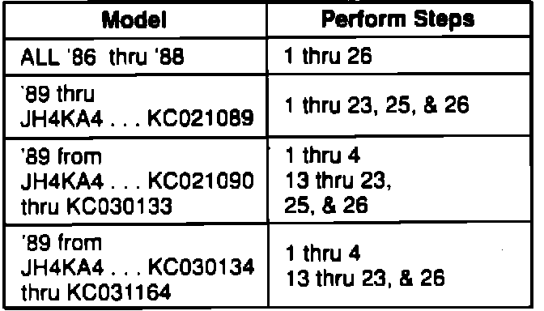
VEHICLES AFFECTED
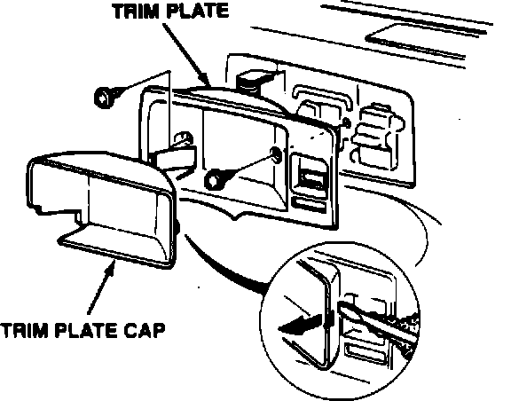
PROCEDURE
1. Check the affected door for a flush fit with the front fender and rear door. Also check for equal gaps at the front and rear edges of the door. If necessary, adjust the door as described in the Body section of the service manual.
2. Lower the window fully. Remove the inside door handle trim plate cap, then remove the trim plate.
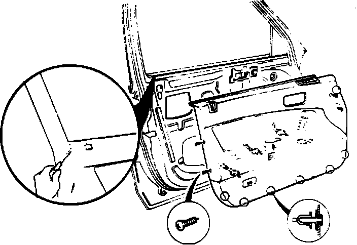
3. Remove the door panel screws, then release the door panel clips along the bottom of the panel with a trim pad remover. Use a screwdriver to pry the upper rear corner of the door panel up and off of the inner door skin. Disconnect the courtesy light, power window switch, trunk opener switch, and power seat memory switch, then set the door panel aside.
CAUTION: Do not pull up on the lower part of the door panel when removing the panel or you may damage the door panel lower seam.
NOTE: Remove any door panel clips that are still in the door and reinstall them on the door panel.
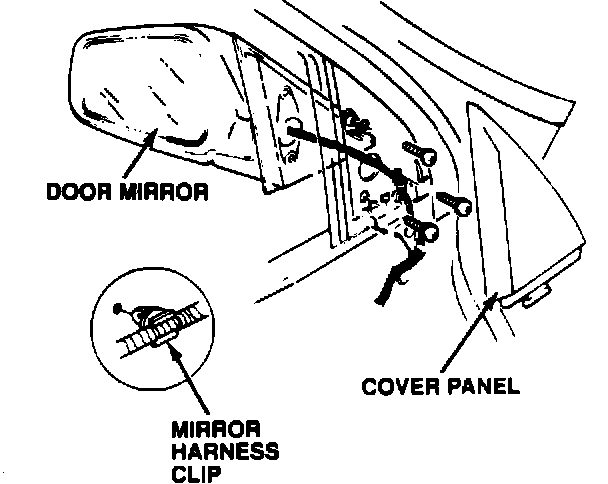
4. Disconnect the mirror connector, remove the mirror harness clip from the door, then remove the door mirror.
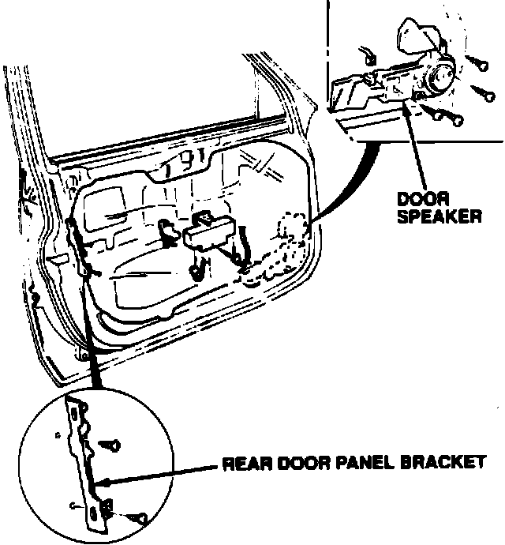
5. Remove the speaker and the rear door panel bracket from the door.
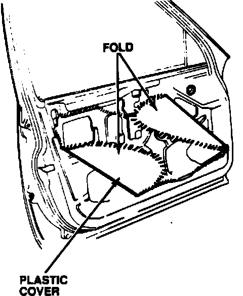
6. Carefully pull the upper front and lower rear corners of the plastic door cover away from the door.
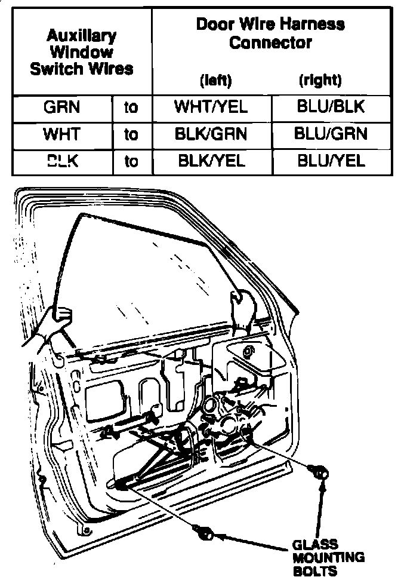
7. Remove the door glass.
NOTE: If you need to raise or lower the window, connect the Auxiliary Window Switch, T/N 07KAZ-001000A, to the door wire harness as shown below:
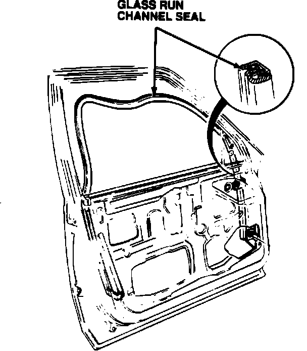
8. Remove the glass run channel seal.
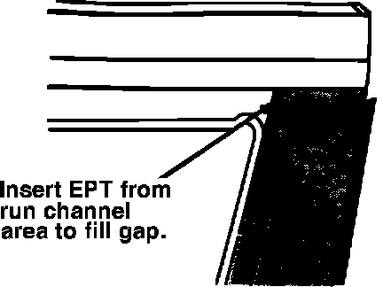
9. There is a gap behind the door sash garnish where it meets the upper rear corner of the door. Fill this gap with a piece of EPT sealer 5t.
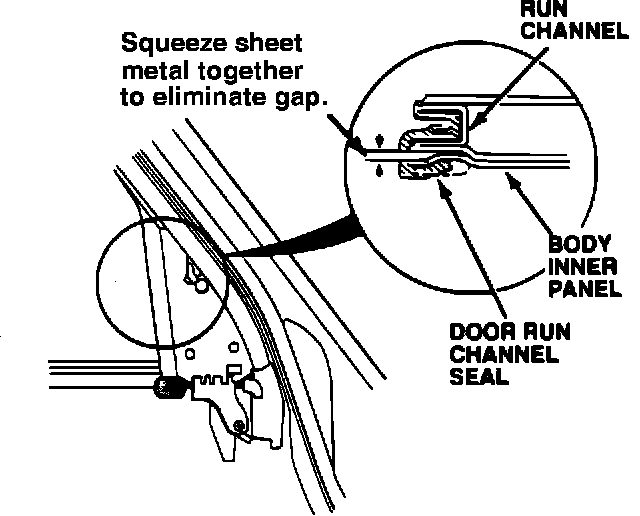
10. Inspect the sheet metal and the run channel in the mirror mount area. Use pliers to squeeze the two layers of sheet metal on the interior side of the run channel together. Apply non-hardening weatherstrip adhesive to seal any gaps between the run channel and the sheet metal.
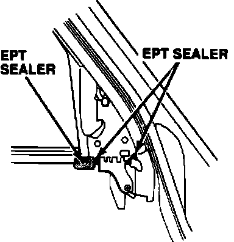
11. Lubricate a new glass run channel seal (listed under PARTS INFORMATION) with silicone spray. Start installing the seal at the top rear corner of the window opening, then work forward. Make sure the piece of EPT sealer that is attached to the seal is properly positioned where the mirror mount meets the inner door skin.
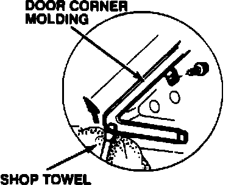
12. Reinstall the door glass and reseal the plastic door cover. Reinstall the speaker and the rear door panel bracket.
NOTE: Make sure the plastic cover is thoroughly sealed and that all the holes in the inner door skin are covered.
13. Inspect the door corner molding. If the corner molding does not fit flush with the body, or the leading edge of the outer door glass molding is higher than the corner molding, remove the corner and outer moldings.
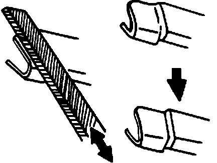
14. Using a flat file with a square side, file the rear section of the corner molding so that the surface of the outer molding will be lower than the surface of the corner molding.
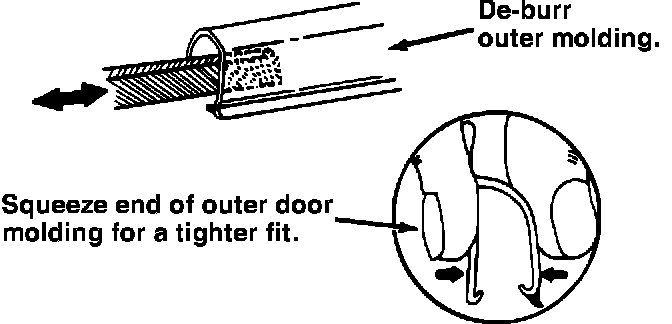
15. Apply non-hardening weatherstrip adhesive under the leading edge of the corner molding, then reinstall it. De-burr the open end of the outer molding, then squeeze the end between your thumb and finger so it will fit tightly over the corner molding.
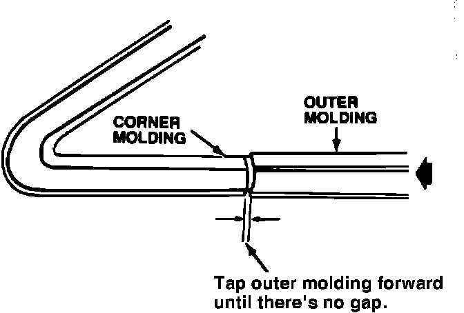
16. Reinstall the outer molding. Tap the outer molding forward until there is no gap between it and the corner molding.
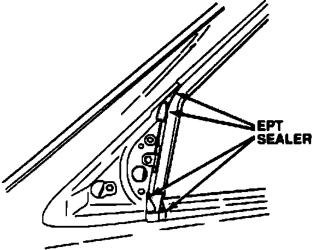
17. Use pieces of EPT sealer to fill the gaps in the corners of the mirror mounting area, as shown.
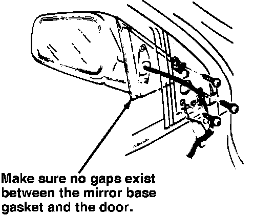
18. Reinstall the door mirror. If any gaps exist between the mirror base gasket and the door, seal them with non-hardening weatherstrip adhesive. Reconnect the mirror harness and secure the harness clip to the door. Don't install the inner cover panel yet.
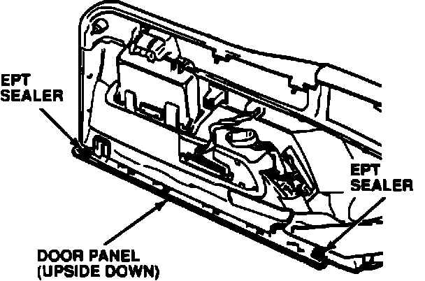
19. Cut two 30 x 30 mm pieces of EPT sealer 10t. Install the EPT under the ends of the door panel where it slips over the inner door skin, as shown.
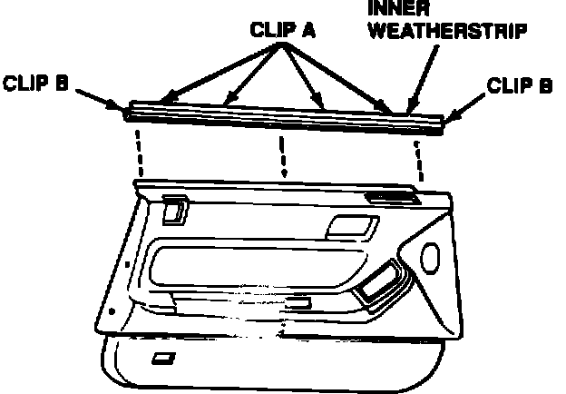
20. Remove the original inner weatherstrip from the door panel, then install the new inner weatherstrip (listed under PARTS INFORMATION).
NOTE: The clips that attach the inner weatherstrip to the door panel are easily broken. Their part numbers are listed under PARTS INFORMATION.
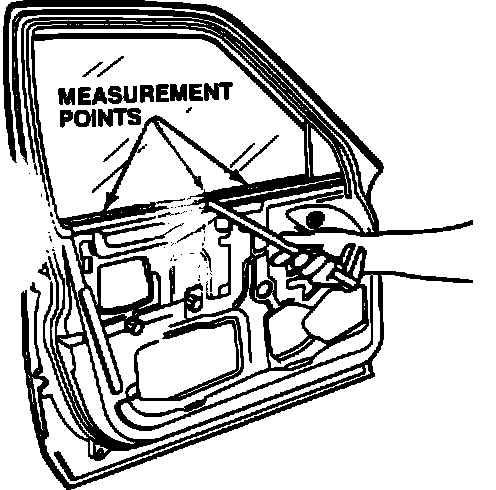
21. Raise the window fully. Measure the distance from the interior side of the inner door skin to the door glass at the three points shown. The distance should be 14-15 mm.
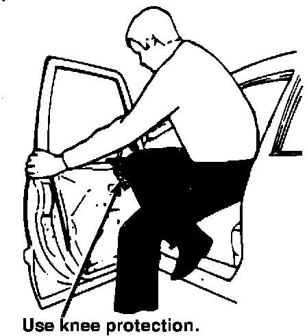
22. To adjust the distance, hold the door at both ends and, using some form of knee protection, gently push your knee against the top of the inner door skin. Make final adjustments at the clip locations with pliers.
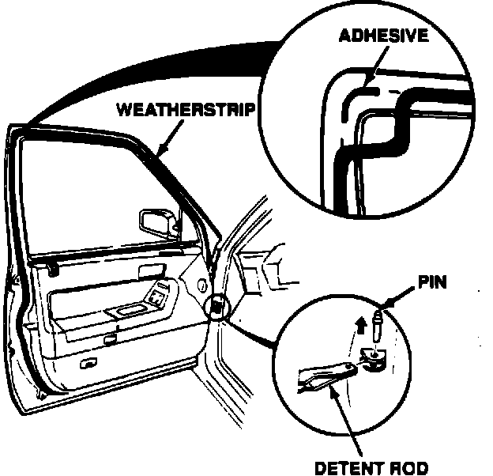
23. Reinstall the door panel. Make sure the front of the inner weatherstrip butts up against the glass run channel seal.
24. Using a trim pad remover, remove the original door weatherstrip, then install the new weatherstrip (listed under PARTS INFORMATION). Apply some weatherstrip cement under the upper rear corner of the weatherstrip, as shown.
NOTE: To replace the weatherstrip, temporarily disconnect the door's detent rod.
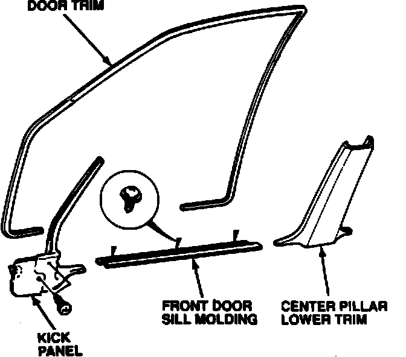
25. Remove the door sill molding, kick panel, and center pillar lower trim. Remove the original door trim, then install the new door trim (listed under PARTS INFORMATION). Reinstall the center panel trim, kick panel, and door sill molding.
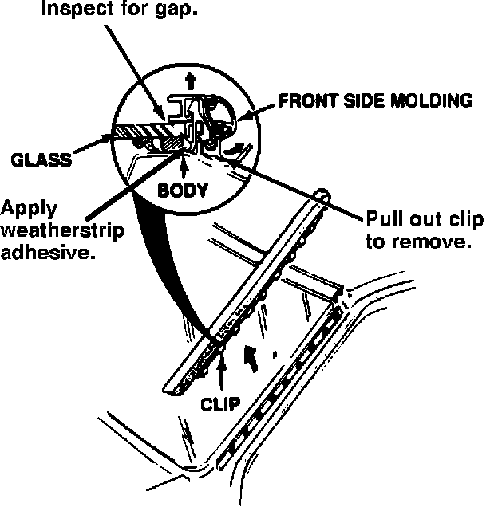
26. Inspect the windshield side molding. If the molding is loose or if there is a gap between the molding seal and the windshield, remove the molding as described in the service manual. Apply non-hardening weatherstrip adhesive where shown, then reinstall the molding.
PARTS INFORMATION
Weatherstrip, Left: P/N 72350-SD4-013 Weatherstrip, Right: P/N 72310-SD4-013
Inner Weatherstrip, Left: P/N 72375-SD4-020 Inner Weatherstrip, Right: P/N 72335-SD4-020 Inner Weatherstrip Clip A:
P/N 72380-SD4-000 (4 per side) Inner Weatherstrip Clip B:
P/N 72382-SD4-000 (2 per side)
Glass Run Channel Seal, Left: P/N 72275-SD4-J01 Glass Run Channel Seal, Right: P/N 72235-SD4-J01
EPT Sealer, 5t: P/N 06991-SA5-000 EPT Sealer, 10t: P/N 06992-SA5-000 3M Non-hardening Weatherstrip Adhesive, (or equivalent): 3M P/N 051135-08011
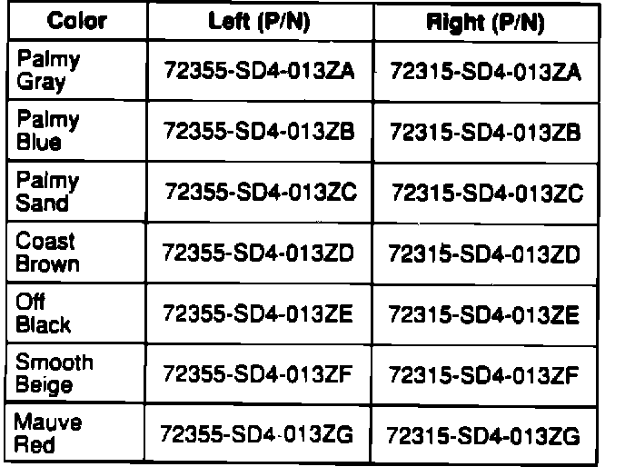
Door Trim:
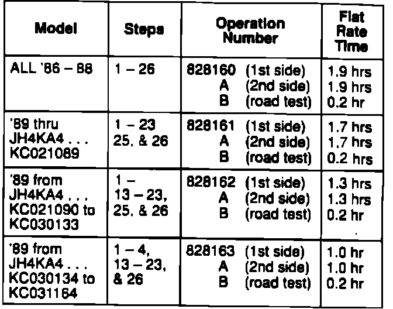
WARRANTY CLAIM INFORMATION
In warranty: The normal warranty applies.
Out-of-warranty: Any repair performed after warranty expiration may be eligible for goodwill consideration by the District Service Manager. You must request consideration, and get the DSM's decision, before starting work.
Failed P/N: 72375-SD4-000
Defect code: 060
Contention code: B99